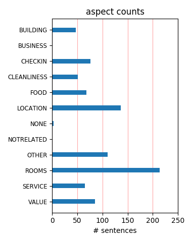
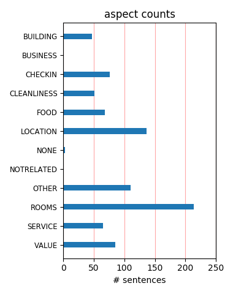

Nice hotel, it is not a luxury hotel, but the room was good. In the restaurant on the top floor you have a nice view! Because we've had a jetlag, we went to bed early. We had a good night sleep, no noises!
We stay there for 4 days, on the first day we ask the front desk if there was a safeway or a wal-mart close buy , they said that they did not no, The housekeeping was great , we ask her where there was wal-mart, thank goodness for her
This hotel was in a great location with fantastic views. We had a car but walked most places. It was a safe location with a lot of restaurants and shops around it. The room was a little on the small side but sufficient for the two of us. Clean and tidy with helpful staff.
After booking myself into a hotel in North Vancouver by accident this hotel was a pleasant surprise. It is right in the Heart of Down town Vancouver. The hotel is nice and clean, the views from the bedroom windows are brilliant you can see the whole of Vancouver City and the Mountains.
The staff were wonderful. I travel to Canada (Ontario) often and the area is Canadian, but much like West Coast US. I did not like the room... it was OLD and there was a slight bit of mold in the shower. This I would expect in a tropical climate, not northern. Would I repeat this stay? NO.
Fully depreciated and then some. I think I stayed up all night praying there was no fire. The vending and ice machine was in deplorable condition and was not even on the same floor. This place needs demolished. Shame on me for selecting this place. The view from the revolving restaurant was the best part of the hotel.
i stayed as a solo traveller in Sept 2011 Staff were very helpful, rooms were clean and i had a large twin room on the 13th floor. Balcony gave fantastic views up Robsona dn could also see both harbours. great city location and only a 5.10 minute walk to Van city and 10 mins to Stanley park. Would certainly stay here again.
The greatest thing about this hotel is the location, its on Robson Street, right downtown, everything is in walking distance. But room is very small. I stayed only for one night for a stop over on my way to Ottawa. On the return flight, I stayed in another hotel which way better than this. This hotel is okay for those traveling on a budget.
I can’t recommend this hotel unless the price you get is very cheap. Small, tired rooms kept as clean as something 15+ years can be. Thin walls with guest and elevator noise. Bizarre unhelpful reception staff who seem overworked and using poor systems. Great views from the balcony, but a disappointment each time you turn back into the room.
I've been several times at the Empire Landmark Hotel. The view from the top revolving restaurant is maybe the best view you can get in Northamerica.myou may enjoy the same awesome view from the rooms at the high floors. All the rooms are with balcony. The only issue is the space of the rooms and the furniture that looks a bit outdated. Nice personnel service.
Location is great. If you need a fitness center not one piece of equipment was operable.....not to mention it is in a dungeon. No snack bar or room service and the duvet does not fit the bed. I cannot recommend this hotel BUT for price and location it is fine. We were so disappointed that we moved to the Westin Bayshore and had to breathe a huge sigh of relief
Don't bother staying at this hotel. The location is the only good thing about it!! The rooms are old and dirty, with stained carpets, dirty washrooms and tiny televisions. We were sweating to death our first night & that was the air conditioning at full blast!! The check in area is very small & lined up, with only two people working. The fitness area is a joke.
We stayed here as part of a package deal with Air North so we got a good price for this hotel. The room was average, the service was pretty good. We were disappointed that the hot tub wasn't working and it is a bit of a walk to downtown. The best thing about this hotel was the view from the bedroom window, I would probably stay here again if another good deal presented itself.
Fine hotel in a well located neighborhood. Very helpful employees. Reasonable rate. Beautiful views. Easy to park. Area recommendations Downtown Vancouver is a great place to stay. There's a great mixture of shops, tourist attractions and night life. There are so many things to try and the transport system is set up in a way that they are mostly accessible by public transport.
Nice older hotel good location. Would have like to have more time in the restaurant/lounge. Closed early that night on a Thursday?? Especially when our concert didn't get over until 10:30 pm, would have liked a night cap in the lounge but truly enjoyed the view. Maybe next time. The main lobby is really Reto, enjoyed it and the views from the room All & all a good stay. Thank you.
I was somewhat sceptical about booking this room looking at tripadvisor but couldn't have been happier. Jock at the front desk was superb and we got a deluxe room on the 34th floor. The room was a very good size and was clean and comfortable. The decor was dated but was in good condition. The views were amazing across the bay - really made the stay. Would definitely stay here again.
I wasn't expecting much from this hotel for the price but I was really impressed. Amazing views with a balcony. Clean and spacious room on one of the top floors. Was a little away from Vancouver Convention Centre but is in the heart of downtown VC on Robson Street. Excellent value for money and would stay in again. Only downside was that the price did not include breakfast and wi-fi.
It’s a luxury Hotel, one of the sky scrapers, I had a room AT the top with a nice view – the Bay. The rooms are big enough and modern. They llok very elegant, they are great for business trips as well as personal excursions. The food in the restaurant was great. The business facilities were also very well prepared. The staff was friendly and helpful when it came to explain the city attractions.
On the plus side, this hotel had amazing views (my room on the 32nd floor overlooked Stanley Park), and the room was small but comfortable, quiet and clean. Bathroom was fine. The breakfast in the restaurant on the top floor was amazing, and dinner there was a great experience. It's a bit of a hike to downtown from here, but very close to Stanley Park. Staff were friendly and helpful, if a bit....dour.
The hotel was a bit on the old fashioned side, but we found the cleanliness ok. The staff were very helpfull and room we had, what a view, robson street, grouse mountain,the harbour with the yaucht's well we were on the 39 floor. easy walking distance for stanley park,your on Robson street go up the street for designer shopping or down for indoor markets. We would use the hotel again good value for money.
For the price & the location its not too bad, although it definately isn't the best. Its right on Robson street so is close to all the shopping and close to the harbour too. We didn't get to try the restaurant on the top floor, but heard very good reviews. The hotel itself is looking a bit dated and the reception area definately needs a rethink as its tucked away and when you walk in the hotel you can't see it.
We only stayed here for one night but the hotel served us very well for what we needed. It was in walking range of many great restaurants and shops downtown (as well as the waterfront) and the views from our balcony were incredible. The room was pretty basic but clean, and the staff was very helpful in showing us where to go for lunch and a little sightseeing. For the price we got for our room, it was a great value.
This hotel needs an upgrade. The bar is closed as is the downstairs restaurant. The only breakfast is the $17 buffet. The rooms are 1970s decor. Basic TV and even some of the basic channels did not work. TV is an old tube set. Cost of checking email is $14! Plus $10 for parking which was not mentioned at check in. Furniture is some kind of retro blue steel. We have stayed here several times in past years but will not be staying there again.
Arrived at the Hotel from Australia after a flight from hell and needed a good quite nights sleep to get over extreme jetlag. The room was not just noisy with thin walls but the plumbing could be heard all night. To the credit of the Management they moved us up a number of floors and it improved. The Hotel is getting in need of an update. Although I would not recommend the Hotel it is in a great location. You could do better in a great city.
First time in Vancouver, we lucked out. Nice clean hotel. We stayed on the 30th floor. Unbelievable views from balcony. Had cocktails on the 42nd floor rotating restaurant. Location was handy to everything. Took the BIG RED Bus for 2 days and saw all the sights. It stops at the hotel. The free bus to Capilano suspension bridge is a must. Stayed 3 days prior to an Alaskan cruise and was so glad that we did. Will stay at this hotel next time we are in Vancouver.
Check in was really slow, not what we really wanted after a 10 hour flight. Parking for our hire car was onsite at $15 a day, but could take out the car as often as we'd like. So plus point there. The deluxe room as they call it was a refurbished room, minus the bathroom, this had seen better days. Due to the plumbing and being on the 25th floor flushing the toilet meant it took 10 minutes to fill the cistern. The shower pressure was not an issue and was fine.
This hotel room was very disappointing. Although clean and well-maintained, it was not a comfortable stay. The room was very small, had no refrigerator, no Internet access, and there weren't even two sheets on the beds, which were only doubles, not queens. The television was very small and the bathroom had no exhaust fan. The view was poor and the balcony hardly big enough in which to turn around. I have stayed in many hotels for a lot less with many more amenities.
This hotel is in a great location, in the middle of shopping and within walking distance of stanley park, the waterfront, and granville bars. The room was perfectly comfortable. The check-in staff was very polite and helpful; they set us up in the room with the best view available (when we asked). Vancouver is a city of amazing views (especially when the sun shines), but there may not be enough urban/cultural attractions for a lengthy stay (if you are into that sort of thing).
This is a hotel that's situated perfectly in Downtown Vancouver. We were very happy with our stay - make sure to ask for Jock! He really takes care of his guests - he found out that this was our first time in Vancouver and put us on the 26th floor (I recommend as far from the elevators as possible). Our room was an -03 room and was perfect for staying overnight before our cruise. Jock also set it up that we had a great anniversary dinner in the rotating diner at the top of the hotel.
This is an older hotel. It was clean, but it did show its age. It was also loud. The toilets were really loud when they flushed & would keep running if you didn't jiggle the handle. The doors to the rooms would easily slam shut & as our neighbors would come in late at night, their doors would wake us up. The location is nice though. There are lots of restaurants within walking distance as well as the Vancouver Aquarium. Next time, we will spend a few extra bucks & stay somewhere quieter.
3 couples just spent a night at this property and found it to be in a good location and nice views.The room were ok,nothing more,nothing less.We were out and about and busy so the rooms were adequate to sleep in.The hotel itself doesnt have alot of services etc.The Cloud 9 Restaurant on the top floor really needs to be redone it has lost its luster. If part of your vacation experiance is to enjoy the hotel facility you are in this isnt the place. But for reasonable accommodation this will do fine
I do not often write reviews on accom, but in this case i feel i have to, We stayed originally 3 nights(trying pot luck off internet reviews), then away for 3, and enjoyed the location, friendly staff, great views, price and the breakfasts so much we came back and stayed another 2 times after that, each time was better than the previous. Totally recommend this hotel, it is older, but you get what you pay for, and for 85cad/night (offseason price 2009) including breakfast for 2, really it cant be beaten.
We paid less than $100 for a great room, large comfortable and very clean...excellent parking $15 per night, good location. We had dinner in the hotel restaurant.....the food was pretty poor. This place really needs a restaurant makeover. the location is STUNNING - its a revolving restaurant with panoramic views of Vancouver...awesome, but the furnishings are very tired and the food memorable for all the wrong reasons and it wasnt cheap. This place needs a visit from Gordon Ramsey...its a potential gold mine.
Don't really know where to start with this place, it's old tired well passed it's best and has a funny old smell about it If you have to go here take your own pillows as they stink, and not in a nice way The rooms are very tired, and where some reviews mention the lobby is ok, I have to disagree, just look up at the ceiling! I canlt stress enough for people to AVOID this place like the plague We've had flee bites from the bed and there's silver fish crawling in and out from under the skirting boards Total and utter dump
We stayed one night in order to attend the Rod Stewart concert (outstanding). Staff were very helpful, stashing our bicycles in secure storage. The view from our room was over the city towards BC Place, and we walked - half an hour - to GM Place for the concert. The hotel is on Robson Street, which is very interesting for a leisurely stroll. Close to Granville Island market and Stanley Park. Our rate ($160 with tax) included a fine cooked breakfast at their resto on the 42nd floor, Cloud 9, which revolves at night. Definitely recommended.
This hotel is a disappointment. It has a wonderful location, and some good staff, that is the best I can say about it. The rooms are very outdated. Avoid the type of rooms with connecting doors, unless you are part of a party using both rooms, as that door is paper thin. The staff was pleasant when i asked for a room change due to noise. This hotel needs to seriously look at moderization issues. I was surprised to see a flat screen tv, but the beds are terrible and the other furniture is back in the 70s. Okay in a pinch but look elsewhere.
We've stayed at the Empire Landmark before so we knew we would want to stay there again. We were there from Sept. 6-12, 2008 and couldn't have asked for a better stay. The staff were extremely helpful in meeting our needs and special requests. The views were incredible! The food at the Cloud 9 Restaurant awesome. Everything that you want or need is within walking distance. Shops, restaurants, Stanley Park, English Bay. The rates were very reasonable for a prime location on Robson. I would recommend this hotel to anyone wanting to visit Vancouver.
The Empire Landmark is a favorite, especially among an Asian clientel, for basic and affordable accomodations in Vancouver's West End. While Robson street, the primier shopping ginza of Vancouver, as taken a down-turn, the hotel's proximity to the plethora of shops there and on Denman, as well as to the English Bay beach and promonade make it an excellent choice for budget-minded travelers who want the city location. Some rooms have been recently remodeled to be fairly spartan, but the mini-refrigerator, coffee-maker, and sink are a definite pluse.
I stayed at the Empire Landmark from nov 30-dec 1. Upon checking in I went up to my room on the 31st floor. The room was small and basic 1 queen sized bed a chair, dresser, and night stands. The view was awesome. However the hot tub and fitness centre close early at 9pm as well as the laundry and vending machine room. The hotel i found to be clean and comfortable. The tv however made some staticy noises but actual reception was good. I would deffinately stay here again however in the summer our room would be $189 a bit much for the size of the room.
While I was hoping for a room higher up for a better view ( We were on the 12th floor out of 42), I was thrilled to be able to get into our room at 8 AM after arriving on a cruise. Service was always very responsive and the location is great just a walk from shopping and the waterfront. The bed was comfortable and the TV was a very large LCD. We had planned to have dinner the second night at the top floor restaurant, but it was booked all day for a private event. There is a shuttle that stops in front of the hotel that can take you to the airport for $18.
We booked at the Empire Landmark based on posted reviews on Hotels.com, as well as location and price. When we arrived, we found a hotel with filthy carpet in the hallways and lobby. Based on that observation, we requested to view the rooms prior to registration. The rooms we were shown were musty and smelly. There was mold in the showers! We decided to stay only after they upgraded us to a higher floor where the rooms had been remodeled. The staff was pleasant, the views great and the city remarkable. Hopefully, the renovation will reach the lower floors soon.
if you expect an outdated motel room you wouldn't be surprised. the room does not look like a 'hotel' at all, everything is old and worn out. I tried several times to reach the front desk thinking that I was getting a busy signal until I found out that the speed dial on the phone registered to the front desk was broken. the directory was cleverly hidden deep within the drawer which should've been in clear view. It was a nice surprise that the bed had a fluffy duvet with clean new sheets. wi-fi is charged for approx $15 a day and you need to pay a fee to use their computer.
I stayed here with my partner to attend my friend's wedding. It was small but clean but most impressive was the view from our 32 floor balcony. I would stay here again if only for that. The food was average in the revolving restaurant but again, I lean more towards surroundings than food quality (most food is better if only because I don't have to make it!" Its in the heart of the downtown amidst the night excitement and day culture. My girlfriend's suite (for her and her husband to be and the bridal party to get ready in before the function) was stunning in scope and design.
This is an older hotel but much of the area is. The location was awesome, right in the heart of shopping and restaurants. They put us on a higher floor for no extra charge with a spectacular view of the ocean. The balcony was too small to sit out but it was nice to step out into the fresh air. The revolving restaurant on the top floor had great views as well. I had an issue with the internet the first day but the staff was quick to resolve it. The staff was friendly and very helpful with activity planning and driving directions. The refrigerator was convenient to have in the room.
We tried a few Hotels in Vancouver, this one was below our expectation.Basic hotel nothing more. Pros: The view is awesome. The balcony (tiny) is a plus. Close to Safeway. Cons: The noise coming from the pluming is annoying...Sleep quality was very poor. The room needs to be repaint and it needs new wallpaper. Small room, old furniture . Huge fees for Hotel shuttle $25 for a round trip...Take the sky train if you don't have a lot of luggage... Front desk staff don't know the true meaning of customer service...No smile, no thank you for staying at our hotel or have a good day...Nothing.
I called ahead as I knew there was a heat wave happening at the time, just to make sure there was air conditioning in the room as I don't do sleep well in the heat. They assured me it was all air conditioned. Guess what -- when we arrived the room was very hot and stuffy. We unpacked and set the air on high and took off for the day. When we returned to the room, it was extremely hot and stuffy. Notifed front desk who had someone look at it and then offered us a fan! I like everything else about the hotel, but this one thing really set me off, especially since I had double-checked ahead of time. It spoiled out stay.
The positive on staying at the Empire Landmark is a great location, and reasonable rates, but you get what you pay for... Our up grade room was dated, the bed with no head board, the furniture had to have been 30 years old, but a beautiful new flat screen tv with no remote to operate it. Unfortunately no remote no tv. The heat did not work in the room in this cold weather this last weekend (Nov 20-21) we could see our breath. When checking out the employee just said sorry and could not compinsate us as we did not book direct with the hotel. I will be paying the extra at the Coast hotel which is just around the corner!!!
This hotel is in a great location too bad the front desk staff is very unfriendly and rude! I found them to be very uninterested in answering my questions and in helping me and my party when there was a room mix up all we got was “well we are sold out”. The shower curtain in the bathroom was dirty! It had black marks on it that looked like mold (I didn’t want to touch it to confirm) I found the front desk staff very monotone when I phoned to ask a question and when I went to check out. I work in a hotel and I do not treat guests with the disregard I felt, don’t expect anyone to go out of there way to help you at this hotel!
my friend and i just spent 3 nights at this hotel,it was very handy to robson st,stanley park,waterfront,hop on hop off bus at door,internet cafe directly opposite,this hotel also had a laundry for guests use for a small fee which is excellent to catch up with washing if you are travelling,much cheaper than getting hotels to launder clothes,also a freat market straight down road toward stanley park for fresh vegies,pastries and bread,soup,fruit smoothies etc,real food -back to basics,very enjoyable and open early for breakfast.we took an alaskan criuse from canada pier -taxi was approx$7 cad and a 5 min ride.would recommend
We stayed here for 2 nights. The room was okay, though had seen better days. Most annoying was the cold draft coming through the sliding door/windows. The staff were helpful at check-in, and the view is definitely very good. We had complimentary breakfast vouchers with our room BUT the breakfast was really awful, stale and yucky- even the fruit didn't taste right - go figure! The view during breakfast was amazing, but we wouldn't eat the free buffet breakfast the 2nd morning. Our room wasn't very quiet, but we left the heater fan on all night, which blocked almost everything and dried our throats, too. Not awful, but we won't be back.
We decided to take a last minute trip to Vancouver and booked the hotel a day before our arrival. The hotel staff was very nice and helpful. The hotel room that we stayed in was quite small but it suited our purpose. It had a king size bed and a decent size washroom. The view from our balcony was very nice overlooking part of the harbour and stanley park. The actual location of the hotel is very good as well, you are right on robson street and there are alot of restaurants and shopping on that street. The Empire also had a restaurant called Cloud 9. we did not try it but i heard that the food was pretty good and the views are amazing.
We stayed 3 nights at this hotel and were very disappointed by the state of the facility. The carpets are in bad shape, but the worst thing was the bedding. The bed only has a small duvet, and if one person rolls over, the other is left in out in the cold. I'm not sure how often duvets are laundered, therefore a top sheet would have at least made it seem cleaner. The light switches were filthy and the ceiling had water stains, with stucco that had seen better days. When nearby suites flush the toilet, it sounded like a train going by. On a more positive note, the water pressure in the shower was great, and you can't beat the location.
Loved Vancouver (first time visitor) in part because I truly enjoyed the hotel. After perusing the reviews was a bit apprehensive, but had a very positive experience. All my dealings with the front desk were excellent. My room on the 20th floor had a harbour view. Room service was very prompt. No problems at all. The best is the location - turn right for the cool $$$ venues (go to the Hons Chinese cross the street) - but also walk down the hill to the left to experience a less touristy area (near Stanley Park). The only thing I didn't like - stay was too short, I should have stayed there 2 weeks !! But I will return ! PS: they must have replaced the elevators - they were very fast.
To be honest all hotels in downtown Vancouver are very expensive. The Empire offers a nice hotel at a reasonable price especially with my BCAA discount. Close to transit and Stanley park. The revolving restaurant is worth a visit with excellent views of the city we headed up there for a night cap, cover is free for hotel guests. Parking is reasonable at $15 a night that knocks the socks off any car park in the area. The only major annoyance is that the hotel didn't have free wireless. I can buy a $2 coffee at Starbucks down the road and get free wireless! With YVR, BC ferries, coffee shops and restaurants all offering this service for free I think it makes sense for hotels to join the ranks.
Spent 1 night and 2 days at the Empire Landmark for an insurance seminar attended by 200 or more independent advisors and representative from most of the major life insurance and paramedical companies. The room was comfortable and clean the 3 meals: 1 breakfast, 2 lunches were all very good. The view of the city and more so the harbour and Stanley Park is exceptional. The hotel is located at the west end of Robson Street within easy walking distance of both Stanley Park and some of the best shopping in the Vancouver. The rate was reasonable and the service was very good. Although management suggests not leaving anything in your vehicles, the underground parking is easily accessible and has cameras.
The location is convenient to downtown which is walkable. Gaslight District is a trek, but also doable on foot. Views from the upper floors are spectacular, especially the northwest side. Sliding glass doors and small balconies. Mini-fridge. Bed was OK, not great. Amenities were minimal. The property is old and in need of some serious refurbishing. HVAC is finicky. Furnishings are showing wear. However, prices are quite reasonable and the staff very accommodating. The rather conventional breakfast buffet in the revolving restaurant on the 42 floor was enhanced by a look down at the Vancouver skyline. Lots of other hotels in the area, but none with a view to match so long as you get a room on the higher floors.
We had 9 nights here & were upgraded from a standard room because of the long stay. Staff were well trained, helpful and very friendly. Room was large with great views of the harbour/North Vancouver and mountains. Used the gym a few times and it was well equipped, without the big "don't signs" which often plaster the walls in these areas. Went up to the revolving restaurant for a couple of beers one night and the views were excellent. The hotel is very conveniently placed for transport, shopping, 7/11 store, restaurants, sightseeing, walking - Stanley Park is 10mins walk down the road. The big Asian population meant there were heaps of cheap asian restaurants & foodhalls within easy reach. Would love to go again.
We stayed in this hotel 20 years ago and were brought back in time when entering the hotel. The receptionist on booking in was helpful and friendly and gave us a great room on a higher floor with exceptional views over Vancouver. The room was pleasant and clean enough but still reminds me of our first visit in so many ways including the decor. The revolving restaurant was great and although we did not have dinner we did have a drink in the area set aside for the casual visitor. The only sour note we had was with reception on the day we checked out where an older bearded male receptionist and younger colleague looked and acted as if they would rather be anywhere else than tending to guests but I guess it's not always much fun being nice to guests.
Some Trip Advisor reviews said "kind of old" but it sounded like more people liked it than not. I'll have to read more carefully next time. When we checked in she said she was "upgrading" us to a larger room. Well, it was large, especially the large ash tray (they had said non-smoking, but it smelled of tobacco. The balcony w the gorgeous view had cigarette butts all over the floor. The cabinets had been painted over but there was moldy-like stuff inside. The tub was dirty or stained. So we asked to be moved and were, to a smaller room. A wooden piece of furniture from what looked like the 40's or 50s, that a beaver had taken a bite out of it . Balcony (with the nice view) was "filthy", black all over. We checked out and moved to the Renaissance on the water
Should have decided not to stay here after calling to book a reservation and the guy said he couldn't understand my accent (and I'm Canadian). Service was poor, the restaurant staff at breakfast warned us the buffet was cold, not going to be refilled and that we should just go down the road( this after she was too busy eating her own brekkie to seat us). As part of the nightly rate we had a comp, dinner in Cloud 9, their revolving restaurant, food was average and the bar staff tried to charge us a cover charge as there was live music on. Room was small, and the bed was so hard! Our request for a room on the upper levels was ignored, so were on level 8. Still had a good view of the water. Best location though, being at the end of Robson, in walking distance to everywhere.
I stayed here three nights. The receptionist when I checked in was rather dour but efficient. My room was on the 28th floor and had stunning views and a small (and a bit dirty) balcony. The room was clean and modern with a very comfortable bed and pillows and a small but clean bathroom with plenty of towels and the nice amenities. I ate at Cloud 9, the revolving restaurant. The waiter was pleasant, the food was average (I took the set menu) and again the view was spectacular. The location is excellent, and handy to the stop for the hop on/hop off bus at the Blue Horizon up the street. Good shopping area and not far to the Art Gallery. Not luxurious, but clean and comfortable with adequate air conditioning. A bit of traffic noise is the balcony door was open, but quiet otherwise.
Taxi from the airport left me at the wrong hotel so I had to walk the last block. The cheery chatty welcome from the receptionist quickly put me back in a good mood, especially when she told me my 37th floor room would have a clear view of the superb city of lights fireworks display. My deluxe room was very spacious, simply but adequately furnished, and equipped with a mini-kitchen. The bed was comfortable, bathroom was spotless, although basic and the hotel was quiet so I slept well. The location was perfect with all major attractions within easy walking distance, including Stanley Park, Coal Harbor, Gas Town and Granville Street. Edgar's more, the Big Bus city tour bus stops at the hotel door. Altogether, considering the price I paid, this hotel provided great value and I'd happily stay again.
We are a couple from Paris. We spent two night in this hotel. We were a little disappointed, but it is nevertheless very correct. It is a spacious hotel in a tower of 42 stages. We were on the 25th floor, and the view was really amazing: the Stanley Park on the left, the sea in front of us,... Beautiful. Its location is also really pleasant: very close to the center, in a street very animated. Staff was really accomodating. The lobby is spacious, luxurious, and arranged well. However, rooms are a little simple in comparison with prices. Our bathroom was a little durty, with many moulds and cracks on walls. And it was also really very noisy! In conclusion, this hotel is really safe and correct but prices exagerated in comparison with the quality offered. There is a marked difference between the lobby and rooms...
we had a fantastic view, English bay to the left, grouse mountain to the front, and coal harbour to the right. our room on the 24th floor had a full size fridge to keep your drinks cold in, a (somewhat noisy ) heater.air con and the balcomy that comes as standard with this hotel. dont bother with hotel brekkie unless you have already paid for it $18 for a lacklustre buffet, hmm, head instead to marys hamburger restaurant on davie street, fabby yukon breakfast for $8 or pop across the bridge to the tomahawk diner for pancakes to die for. would stay in this hotel again ( it could do with some updating but everything worked and was cleaned daily) only thing missing was a decent local pub. every different food you can imagine is right there on robson - recommend steamroller burritos. personally he chinese buffett on the right side of robson was a turn off.
I really enjoyed my stay here at the Empire Landmark Hotel. No, it wasn't first class and brand new, but it was everything that we needed. We were on the 32nd floor and had an awesome view of Stanley Park and the water. Plus, we were right on Robson! They had underground parking which was great and the staff was very helpful and friendly. The room could have used some updating, but I was surprised at how big it was. The bathroom was a little small but the room had a small sitting area which you don't see much in standard hotel rooms. I really enjoyed how much space we had and the great little balcony we could enjoy our views from. I would absolutely recommend this hotel, especially if you're looking for a comfortable, clean place to stay that has a really good location. Also, ask for a student rate! We asked for one and ended up getting a great deal on our room.
The best thing about this hotel is the fab view. We stayed on the 35th floor and had a sea to mountain panorama across to Stanley Park. The hotel itself is a bit drab and the bathrooms are small. The paint is peeling from the tiny balcony and the furniture is tired and dated. I didn't have the best nights sleep here - the bed was small for a queen (I thought) and a bit hard for my liking. The lobby also needs a spruce up. However, the staff were also polite and attentive. We called down for pillow and they arrived straight away - as did the missing kettle from our room. Anyway, our attitude was that we spend very little time in the room, so as long as it's clean, it's okay. It was a fairly good location for shopping on Robson, but too far to keep popping back to drop off your purchases during the day! Handy for Denman, English Bay Beach and Stanley Park, though.
We stayed at the Empire Landmark during the first weekend of November. It is located on Robson Street - a great location for walking to shops, restaurants and the convention centre. Short cab ride to BC Place or a good walk. First room that was given was old and tired - we requested a better room - updated and renovated - and were relocated to the 35th floor. Lovely big room with a seating area and a king size bed. Could have used a mirror in the bedroom area and towel racks in the bathroom, though! Very pleased that we were not even charged extra for the better room! We ate once at the Cloud 9 restaurant - buffet breakfast was just okay - really not worth $16.95. We did have a fridge in our room so walked down to Whole Foods and stocked up for the next morning. Overall, a good stay with a great location. Front desk staff very helpful. I would definitely stay again in an updated room.
We had stayed here in 1990 and thought it was a very nice up to date hotel. The lobby is very modern and updated, but the rooms, well I don't think the decor has changed in twenty years. We found the rooms very small. We had a king room that was claustrophobic. We ask the desk clerk if we could be upgraded to a larger room, he told us for $30 more we could have two double beds!!! I'm sorry but I booked a king bed for a reason, and to charge more for a smaller bed. The hotel was only at about 20% occupancy. The balconies are only 2 feet wide and right beside your neighbours, so if the people beside you were outside first you felt like you were intruding. We had buffet breakfast included in our room price, which was also a huge disappointment. If you need to stay in that part of town and want to be on Robson St, stay at the Blue Horizon, bigger rooms (all corner rooms), and private balconies.
I recently had a 3 night stay, and I can say that this is the worst hotel I have stayed in for a long time. The reception area was large and modern, and the staff were OK - not overly enthusiastic or helpful, but OK. My room on 17th floor had a fantastic view but was desperately in need of refurbishment - stained and torn wallpaper, stained carpet, cheap furniture etc. The bathroom was worse - tired and stained, especially the tiles, grouting and bathtub. The room was cold and the air con/heating did not work - and telling reception several times did not result in anyone trying to fix it. I agree with other reviewers about the fantastic views from the revolving restaurant on 42nd floor, but I would not recommend spending your money on a meal there. The food was expensive but only average quality, and service was appalling - staff were openly rude, disinterested and surly. Avoid at all costs!
My fiance & I stayed here for one night on a Saturday. We arrived at 10am fully expecting not to get a room on the spot but to our surprise we were efficiently checked in to a non-smoking room on the 25th floor. The room was clean with an incredible view and a mini fridge/coffee maker/flat screen TV. Small bathroom, outdated furniture, and a narrow balcony. But the views - wow! We each had a 60 hour Shiatsu massage at the little massage place in the lobby, it was $150 with a tip for both of us, so not a bad price, and felt great. We ate at the breakfast buffet in the "revolving" restaurant (I say revolving because it wasn't moving) but weren't that impressed - $16.95 and not much selection, powdered eggs, we had to wait over 15 minutes for clean plates to be brought out. Overall, our stay was good, but the hotel definitely needs updating. However, the views & the location on Robson can't be beat.
Wife and I decided to spend our anniversary at this hotel. I knew the location was great, walking distance to Stanley Park and English Bay. I got a government rate which was $85.00 and parking at the hotel was only $15.00 a day. Our room was on the 25th floor which offered a great view of Stanley park and a nice little balcony to enjoy the view from. The room itself other than the view was nothing special. It came with a king size bed and a nice 32 inch lcd tv. You can tell they haven't but any money into renovations for at least 20 years. The bathroom and carpeting were pretty dated. There was what liked to be mold around the balcony area . The rooms themselves are noisy. Every time our neighbor in the next room would flush the toilet or run the bathroom taps or shower you hear it. The bed was every uncomfortable. The mattress seemed very old. At about 2am we gave up trying to sleep and ended up driving home.
We booked this hotel thru our travel agent for a 3 day stay in Vancouver after our Alaskan cruise. The hotel is right on Robson St and in the heart of some great dining, The room was not overly large, but we were just sleeping there so it was no problem. We had a room on the 22nd floor and the view of Vancouver, the harbor, and the mountains to the north was fabulous...day & night. They could insulate around the plumbing as we could hear showers sinks from other rooms running. We toured with the Big Bus for two days and it stops right in front of the hotel several times a day. As I said restaurants abound either direction from the hotel. There is a McDonalds two blocks away, Starbucks two blocks in either direction along with Blenz Coffee Shops. For those who need supplies there is a Safeway about 3 blocks to your left as you leave the hotel. This was a great stay in a very cosmopolitan city with lots to see & do.
We stayed here for three nights in August 2011. The hotel was recommended by a travel agent but we were disappointed. Check-in was cumbersome and took considerably longer than it should have. Some of the desk staff were unhelpful. For example, the Festival of Light firework display was taking place on the night we arrived and when we asked at check-in if there was anywhere in the hotel where we could view the fireworks we were advised that the restaurant offered a good view but was fully booked that evening. The obvious answer of course was that we'd be able to see the fireworks from our room but that information wasn't forthcoming. The rooms were fairly small and the decor is dated. When the shower curtain has mould on it, it's time to change it. On the whole, we were disappointed with this place. On the plus side, it's in a great location on Robson St with good views and only a short walk to shops bars and restaurants.
The hotel is in the town center, just 10 minutes away from the sea and really close to the night life. It's one of the highest hotels in town, with 42 floors. On the top floor there is a wonderful restaurant with an amazing 360 degrees view all over the Vancouver The view is amazing also from the higher rooms. The rooms are spacious, with two beds, SAT TV, refrigerator, phone. Our room had a balcony, which didn't look very new and could use some retouch. The bathroom is spacious, with a tub. The breakfast was really good self-servise with many deverse food and drink. The lobby is really nice and so is the presonel. You can also find a small souvenir shopp in the lobby. There is a limit with parking if you have a higher van. So you have to ask what's the hight limit (I forgot). I think there is also a bussines center, internet and fitness. The rooms and the hotel was clean and close to everything, so I really recomand it.
DO NOT stay at this hotel. We arrived aroung 2:30 in the AM very tired and jet lagged. The person at the front desk did not communicate with us very well and made for a difficult check-in. When we finally got our "key cards" we went up to our room only to find that the only way to get into our room was to have an actual "key". After trying to explain that one to the front desk, we finally ventured into our rooms. Next to the rooms being dingy and VERY basic, we had no blankets, no clothes iron or board to iron our clothes and the water was scalding hot. After we complained to the front desk about several things, they finally moved two of us to another room, the only one they "claimed" they had left and available. The only improvement about this room is that it had cold water. The view from our room was terrible as is backed up to ghetto housing. The locals laughed at us when they found out where we were staying. So do yourself a favor and check-out of this hotel before you check-in!!!
I stayed at this hotel for my personal thing. The location is very good, on exactly on Robson Street and there are many Korean and Japanese restaurants only 2 blocks away. However, staff there (especially Frontdesk) were not helpful and friendly at all during my stay. They had a promotion that if you go shopping on Robson Street, you can get discount. I found that information in lobby. So, I asked frontdesk staff, but they didn't know anything about it. I even didn't want to go to frontdesk for my some questions. Only great experience I had there is maintenance man was super nice and helpful. You will get good sleep because of the tall building. But my room was pretty dusty and needs to be fixed little bit. I left a comment card for the management at check out, but NO responce. Also, they don't have any complimentary stuff, toothbrush or wi-fi. To use Wi-Fi, you have to pay $20 per day. If you have to use your internet during your stay, try little bit expensive hotel with free Wi-Fi, it must worth it.
I booked this hotel as part of a group for a small event. We all stayed in this hotel. Had I been by myself or with friend I would probably have booked this hotel for the location on Robson. I left feeling I'd paid too much for the hotel. However it was nice to be right on Robson Street. The main downside to the hotel: . the rooms, lobby and elevator need to be massively updated . the staff are like robots . absolutely no amenities ( not even WIFI or a TV ) . I had a fridge but my friend didn't ( same room type ) . the shower was detached from the wall!!! I did find the hotel room clean and the maids very nice and accomodating, the misunderstood and gave me a cot when I asked for more towels but at least i wasn't charged for the cot :) For this hotel to be worth the money they need a serious makeover and friendlier front desk staff. I'll also add that because it has a lot of rooms it's great for groups, conferences e.t.c. Overall it was decent but would score higher if the room wasn't stuck in the 60's.
We had stayed here previously 4 years ago, and whilst not overly impressed the first time around, we thought it must have had the rooms updated since then, with the Olympics coming to Vancouver earlier this year..... WRONG! The rooms are now very outdated - late 70's standard at best. Electrical fittings were very haphazardly installed (whoever did it didn't know about spirit levels), and the one in the bathroom was half hanging off the mirror at first glance, but in fact was fixed that way. There was a hair from a previous occupant in the bath - in a magnificent gesture my wife presented it to the oik on reception who was very dismissive with her on the phone when she called down to complain about the standard of the room. We had booked a 'superior' room, but you don't get anything special with this, which is what we expected, just a bigger room. Couldn't wait to get out of there - we only stayed one night and will never be back again - it left us with a poor experience at the end of our 3 weeks in Canada - cheers.
I was travelling around Canada and the US wiht my 8 yo daughter. we chose to stay here for location, we had family living in Vancouver but they were 45 minutes away from the main city by train so chose to stay more locally and did not regret that choice. Location.. situated just off the busy area of Robson street, everywhere we wanted to visit was walkable.there was also a supermarket within walking distance for stocking up with food. facilities... small room wiht fridge,the hotel had a laundry which was helpful for our 5 night stay staff... the staff were wonderful and exceptionally helpful. what i liked was the way that alternatives were provided e.g. i was informed of the internet charges, but then also informed of the cafes that had free wifi so that I could make a choice as to how to use the internet. we were out for teh majority of our stay, but for the short period we were in this hotel suited our needs. also appreciate the security measures e.g. you cannot access the floors where the rooms are wihtout a room key
If you are used to luxury or upscale rooms with modern amenities, you might be disappointed with this hotel. Rooms at Empire Landmark are as basic as it gets. The alarm clock looked like it was purchased at a garage sale. The room was clean and the price was right for us, but we're used to sleeping in budget hotels. If you're not as picky and looking to spend a little less, it's well worth it for the view alone. Prime location on Robson Street among a multitude of restaurants, shops, and grocery stores. Have at least one drink at the lounge in Cloud 9, restaurant didn't seem worth the price based on other reviews. Next time I will book directly with the hotel, not through Expedia or another travel website. It seems reservations from these sites are for whatever room is available, not necessarily the room you reserved. Booked a queen and received a double twin. When I called the front desk they explained the policy, but this was after we had checked in and went to the room. This policy was not clearly stated on Expedia's website.
I stayed here with my husband while I attended a conference in Vancouver. The member of staff we dealt with on arrival was really nice but the one we checked out with was utterly rude - I guess some people shouldn't work in the service industry. We had a great view from our room and we were in a great location to explore downtown and Stanley Park when I took time out of the conference. The room was nice - en-suite, balcony, comfy beds. They also had a cheap self service laundry room which was great as we had just ended a road trip over the Icefields Parkway and needed to wash some clothes. Also we managed to wangle a cheap deal with to stay there via lastminute so it was good value. However, there was no pool only a crusty hot tub - not great for a large hotel. Also the hotel was very busy with events during the stay and two of our 5 nights were disturbed by other guests (girls running in and out of each others rooms getting ready for a night out one night and some boys doing the same another) but hey, that's not the hotel's fault.
I admit at the beginning of this review that maybe I'm a bit of a spoiled American when it comes to my expectations of hotels. When I booked my stay at this hotel I was aware of the reviews from TripAdvisor that described the hotel as "basic" with no frills. If all you want from a hotel is a safe and cheap place to sleep at night, this hotel would work for you. I did feel safe, but that is about it. My room smelled like a Chinese restaurant the entire time I was there. The furniture is functional, but shabby. When I turned on the air conditioner the smell of cigarette smoke filled my room. Lucky for me I didn't really need it, so I kept it off. I think that the hotel tried their best to provide a clean room, but the cheapness of the decor made it seem dirty to me somehow. I kept my flipflops on the entire time I was in the room. Oh, and someone on the balcony next to mine had hung their laundry out to dry the whole time I was there. The room did have a nice TV. Again, maybe my expectations are too high, but I felt like I was staying in a cheap roadside motel.
Thrilled to find a hotel in downtown Vancouver for less than $100. Unfortunately, so too did the a high school bus trip. Hotel was alright, except the shoe print on the top of the toilet seat. Comfy bedding, awful in-room coffee. One elevator was out of service and the button to the ice machine on the 22nd floor also didn't work. I thought the staff was professional, although the fact that the housekeeper walked into our room and woke us up only an hour after the high school students left for their trip and we were finally getting back to sleep (they were up all night slamming doors and tossing pillows etc.), indicates that there is little communication between front desk staff and housekeepers. When I worked in house keeping, we were given a list of what rooms had checked out and which ones hadn't so we didn't walk in on people. All in all it was a good deal and close to lots of activities. If you go, take advantage of the surroundings as the hotel room lacked fringes - this was the first hotel I've stayed in in a while that only had Tier 1 cable (25 channels).
I stayed three nights at this hotel for business. The rate we got was certainly good, especially for the location. We arrived fairly late in the evening from a cross-country flight. The checkin lady was efficient but not overly welcoming. Getting to the room, my first impression was that it was quite old and worn. Very dated decor, and everything seemed a bit grubby. The room was a very good size, however. Beds and pillows were average and acceptable. The first major frustration was that for some reason, housekeeping forgot to leave towels in my room! Not a huge deal, but after flying for 6 hours, all I really wanted to do was shower and go to sleep. I called reception, and someone did bring towels, but it took about half an hour. It definitely didn't set the trip off on a nice note. The rest of the stay was uneventful. Service was very unassuming. The area around the hotel is quite nice, and a very good location for sightseeing. It is a bit of a hike from the nearest Skytrain station, though. The comments about the loud plumbing and true. It didn't bug me, but I could see how some would find it annoying.
I realize it can be a thankless job, but the front desk attendant was so unfriendly; not a good first impression at all. We get to the room and it was very small. Sat down on the bed and almost cried, felt like a sheet of plywood and no mattress, ended up it was a very old spring mattress. Had a really nice big screen TV, but the channel choices were minimal. On the second day, the elevators were not working when we needed to go out (we were on the 17th floor); turned out they were being inspected so we ended up taking the service elevator with the cleaning staff. The Cloud 9 roof top restaurant was very expensive, so we did not eat there but we did have drinks there in the evening (rotating restaurant - very cool). Had to pay for internet and to park our car (expensive). The cleaning staff were pleasant but the room was not clean to my standards. No iron or ironing board in room, but staff were able to provide these to us on request. As this hotel is on Robson Street, there was no lack of great places to eat. Easy walk to the marina, great view of the North Shore mountains, and very pleasant area. Needless to say, we won't stay here again.
We stayed at this hotel for only one night, after reserving just a few days before. Overall, we have a neutral opinion of this hotel... The location is great, right in the middle of Robson street's bustling activity. Even though it looks like a modern high-rise tower, the building is probably a bit outdated per today's large hotel standards. The front desk staff was efficient, if not particularly friendly. The parking missed a ramp and decent entrance for people with luggage to get to the lobby and elevators. Our room was a bit small, but clean. What we found missing was a small fridge and microwave, which you normally find in hotels of this class. The bathroom was OK, but it is true that we could hear the plumbing noise from the other rooms (just hope your neighbour does not take a shower at 5:00 AM) Also, there were only a couple of ice and vending machines on the 22nd floor (servicing 45 floors); this is probably not enough for the number of rooms. Overall, a decent value for the price, considering the good location. We could consider going back to this hotel, but there must be also other places that are a touch better for the same price.
My husband and I booked a room at this hotel in April 2012 for one night. We traveled to Vancouver on business, so we were not looking for a holiday hotel. The room rate we got was very reasonable (under one hundred dollars). Although we were basically in and out in 12 hours, I would never return to this hotel - I'd rather pay a bit more but get better rooms. I agree with the other reviewers that the view from our room as well as from the restaurant were very nice. Views aside however, the hotel is old. Our room was outdated and in serious need of renovation. The AC switch was probably from the '70s. The walls in the shower had cracks and were sealed with some grey paste. All our pillow cases and towels had hair on them - disgusting. But the most annoying thing was the smell - the entire floor (including our room) smelled of cheap air freshner. It was so bad that, although we slept with the window open, we woke up with liver pains. The breakfast was expensive and equally disgusting. The scrambled eggs were more like a scrambled eggs soup, the breakfast area looked like a warehouse where staff deposited everything and in general, everything looked equally dated and dirty.
This is a hotel on its last legs. It seems to have been there a while and has an enviable location in the middle of active Robson Street. However, the lobby is dark and dingy with worn dirty furniture. There are steep steps at the entrance with no clear disabled access. Ground floor businesses appear to have closed down giving a street level appearance of deserted dilapidation. The rooms are relatively clean but the bathroom fittings are dilapidated. We got a non smoking room which had been a smoking room in the past. The toilet seat was pitted with cigarette burns covered over with white paint. The 42 floors taxed the 4 lifts(elevators) and the wait was often a bit protracted. The fitness suite was prehistoric and not air conditioned. It was on a floor undergoing heavy construction. Breakfast for $15 each was a gastronomic nightmare- cold, stale, tasteless food and service so disorganized it was amusing to watch. The rotating dining room could have done with a good scrub- the decor is tired and dirty- and the view would have improved with some window cleaning. You can do better for the price at Holiday Inn Express or Days Inn. Also there are better small hotels on Robson Street.
Stayed there for nine evening with my families. We had a room on 35th floor. The view from the balcony was excellent. We could oversee the downtown and the ocean. No one could go inside the hotel unless they had a electronic key cards to access the evaluator. A lof of restaurants nearby, such as Japanese food, Korean food, Blenz Coffee, Starbucks and so on. Two blocks away, you could find the Safeway supermarket and 7-eleven. There was a bus station in front of the hotel; and we went to other places by taking the bus and then transferred via the subway. The bus number 5 could bring you to the downtown within 5-10 mins. If you don't want to take the bus, you could walk to the downtown area with 5-10 mins. There were a lot of shops, restaurtants and drug stores nearby. Very safe to walk alone even after nine. I found many students taking their dinner around that area during the lunch time; and tourists & local people for the dinner. No need to take the breakfast at the Cloud restaurant inside the hotel although it was located on the top floor in which you could oversee the city view, there were many restaurants nearby. I went there via the airport express skytrain and then bus number 5; and I found there was no problem for us at all.
The Empire Landmark is a moderate hotel with clean if somewhat shabby rooms. They seem to cater to Asian tourists - the written materials in our room (menus for the restaurant, phone use guide, etc) were all primarily in an Asian language - Japanese or Korean, I think. As far as we could tell there is no room service, but we don't read Japanese, so who knows. The view was gorgeous and the bed clean and comfortable. I don't think the location is that great - it's not on the main stretch of Robson, it's a little further out, so you've got a bit of an uphill trek to get the shopping and Art Gallery area. But it's not out in the boonies by any means. The TV was an old, small thing that just got some basic cable channels - no movie channels and very little selection. I particularly liked that it was quiet - we were right on the elevators and didn't hear them in our room, and I didn't hear any sound from neighboring rooms at all. My main gripe is with the staff, who were cool, unsmiling, generally uneager to assist, and in one incident downright rude. My final take on it is, I stayed at the Hyatt Regency earlier this year for about $20 more a night, and it is a much, much nicer hotel with much nicer rooms, friendlier staff and a better location.
This hotel should change it's name from the Empire Landmark to the Empire Relic! We spent 2 nights and were extremely disappointed with the upkeep and cleanliness. The online photos are accurate only for the hotel lobby which is sparkling and modern. Every other detail, from the elevators to the hallways, to the rooms looks like nothing has been updated - or cleaned/renovated since the 1980's. The room was extremely small with outdated, chipped and stained furniture. The molding in the room was marked throughout. In the bathroom, there was an old plastic yellow showerhead, accompanied by a dirty and discolored grouted fixture on the ceiling. The Mr. Coffee coffeemaker looked about 20+ years old, as well as the blowdryer in the closet which had dust/hair residue caked on the back vents. The balcony looked as if it hadn't been cleaned in years. One of the draws of this hotel is the revolving restaurant on top. We had a very nice dinner there but if we had known ahead of time about the hotel upkeep, we would have stayed somewhere else and only gone to dinner at the restaurant. This would be my recommendation. When we checked out, we were not asked the standard "how was your stay?" question...and we knew why!!! Photos will follow when we return home...
I was surprised to see rates as low as $79 for this hotel. The hotel had a nice location although a bit lacking in nearby pubs and bars. We were greeted by a friendly receptionist who put us on the 22nd floor with views to Stanley Park. The room was decent in size and had a standing style patio which was nice although could be a bit intrusive if somebody was on a neighboring balcony. We loved the views from English Bay to the the south up to North Vancouver to the north. The bathrooms were basic although having a nice warm shower flow. The beds pretty firm. We never made it to the rooftop restaurant. Security was helpful in a pretty fusing parking garage. All the employees seemed to have postive attitude though. The only real drawback was having to pay for wifi. Nobody asked if we wanted it when we checked in. We assumed it was free. Later that day we called the front desk and was told we couldn't just bill it to the card. Instead a security guard had to come to the room and have you sign for it. This seems like something the staff could inform you of at check in to avoid the hassle. Or better yet, the hotel should just charge $5 more a night and give it away free. Vancouver is an amazing city, and the Empire Landmark is a very nice hotel for the price paid.
We stayed in this hotel for 3 nights. When we first entered the lobby, the room was filled with airline stewardesses that had appeared to have just checked into the hotel. The only 2 clerks on staff looked very distressed and the clerk that was assisting me was interrupted by several of the stewardesses that kept coming in front of the counter asking questions. The clerk finally had enough and spoke very direct to make them stop coming up to the counter and interrupting. The clerk wasn't pleasant to me really but I understood what he was going through. Our room was on the 31st floor facing the west which had a spectacular view from the balcony. This hotel was built in the mid 1970's but the rooms were still quite pleasant. The room was large and had a nice bed and a decent shower with an extra mirror and sink external from the bathroom. The hotel has very fast elevators but beware coming out into the lobby. We were bombarded by large groups of people rushing into the elevator without letting us out first. I'm not kidding, very rude. The rotating restaurant has great views but the food wasn't that impressive. Don't bother going there for breakfast as it's Continental and still very expensive. But, if you want expensive food with little service and a great view then try it out
There are so many great hotels in the downtown Vancouver core. The location for the Empire Landmark is ideal - right on Robson Street, close to shopping and restaurants. I had the misfortune of staying there for two nights, due to a work conference. The rooms are dingy, drab and small. The owners of this independent hotel have made some upgrades to the lobby to give it a modern feel and they have replaced the carpets in the hallways but the rooms need a lot of TLC. As a solo, female traveler I wanted to feel safe and secure in my room - sadly, I did not. The door didn't close properly, even with the double-latch and so I slept with the bathroom light on. This was the second room I was given. Upon check-in, I was given a really small corner room, right next to the elevators - in that room (I wished I'd taken a photo) the wallpaper was falling off and the bathroom was moldly. I paid for an upgrade ($20 more per night) and got moved to the 27th floor. Bigger room, but same shabby workmanship. This hotel seems to have struck a business deal with Japanese tour companies and most of their effort (in terms of customer service) is expended on catering to this clientele. Business travelers are left to their own devices and paid very little attention. Would I stay here again? Definitely not! Two big thumbs down.
I stayed at the Empire Landmark in May 2010. I had a basic room, two double beds with a TV and small bathroom. The rooms themselves aren't anything special, but they provide the basic needs to get through your stay. They give you a small kitchenette as well. The balcony was long but not very wide so it was difficult to sit if you wanted to. Nonetheless the view was spectacular and the location was very good. The lobby is fine, but can be crowded at times because of the convention centre. The hallways could use some updating and the lighting is a little dim, but I don't mind that. We were given breakfast buffet tickets to use at the 'Cloud 9' restaurant on the 42nd floor, which again offers really great views. I think it only rotates at dinner time though. The breakfast offered the usual: eggs, bacon, fruit, cereal, toast, juice, and it's worthwhile. Sometimes it can be a little noisy at night due to the downtown location, and the hallways can be noisy as well, but you usually get that with any hotel. The hotel is right on Robson street, so it's in the middle of lots of restaurants and shops. It isn't a very far walk to attractions like Stanley Park or the Olympic Torch, the city is very good that way. You could tell the building is somewhat old looking and has been updated a few times, but it was a worthwhile stay.
The Empire Landmark is one of my favorite places to stay in Vancouver however be prepared for inconsistant service and tired facilities. Pros: Fantastic location, on Robson street, shopping, dining and downtown all within blocks. Short walk to Stanley Park and Denman Street attractions too. Most of the upper floor rooms have superb views and lanais. Cloud Room on 42nd floor offers a revolving restaurant/bar with perhaps one of the best views in the city. Live music on weekends, no cover charge for guests. Elevators are fast, parking garage is only $10 per night. Great value, rates are very reasonable compared to other hotels in the area. $79 US off season. Never had an issue with cleanliness. Reasonably quiet, not lacking in amenities. Cons: So what's wrong with the place? I think the hotel is a bit understaffed and needs a makeover. (But then it won't be the value it is) I've always had a long wait at check in. Service in the restaurant or bar is friendly but so slow, waiting for just about everything is the norm here. At one time this must have been one of the premier properties in the city. Furniture and finishes are now beat up and tired. Ground floor restaurant closed. Go: If you want a hotel that offers a great rate, very convenient location and superb views. But be prepared for inconsistant service and a place no longer in its prime.
We flew from NYC and on the very first night at the Empire Landmark in Vancouver, there was no heat and we were cold. We called the front desk multiple times and were told that all of their rooms were booked but that they would assign a new room after check out the following day. The new room was average and upon checkout I asked for some type of compensation for the first night being so uncomfortable (the room was so cold that my traveling partner could not sleep). We were told that the hotel would not offer refunds and that we would have to go through our booking agent (one of the web travel companies). When I called the booking agent, I was told that it was the hotel's responsibility to handle refunds. The hotel had no integrity and after multiple attempts by the booking agent and just as many denials by the Empire Landmark, no further efforts were made to rectify the situation and I was told that there was no chance of a refund (again, for the night that we couldn't sleep because we had no heat). This hotel is not run by people of high character (although some of the people who worked there were nice). Fortunately, we were protected from this sort of thing through our CC. Beware of this hotel, the Empire Landmark in Vancouver (the name even sounds as if it could be bad news or worse). Needless to say, I would not recommend this hotel. I hope that this review helps.
My first impression while squeezing through a dirty, narrow corridor from the urine smelling parkade was not very good. Then there was the 10 minute wait to check in. And the size of the room was smaller than usual. But it was fine after that. We had a standard room with king size bed on NYE. Pros: Great view; good rate for a downtown hotel; good location (on Robson which is full of designed and other shops and plenty of restaurants, and a few minutes from Stanley Park); extremely comfortable bed with down-like comforter and plush pillows; clean enough for an old hotel; mini fridge and usual in room amenities; can control heat/a/c; good water pressure; real balconies (so can open door); lifts are fast; restaurant has the best views in the city; reception does provide needed info (although this makes it slow to check in); have express checkout drop box. Cons: Small rooms; not enough receptionists for busy times and they have little decision making discretion so must check with the manager for even small things; very dodgy parking area (I would not want to be there alone) and they specified 4 times to not leave valuables in the car so I would wonder how secure it is; limited restaurant hours (closed after 10 am until dinner); no hut tub! I wish I could give a better review as this is a "landmark". I would go there again if the price was right b/c the beds are great and that is the main thing you need. If you want a hotel room to spend time in, I would go elsewhere.
The location of the Hotel is very good, and has a great view from the 42 floor and if you are lucky to get a room above the 30 floor. We stayed 4 nights before our trip to the Rockies and 1 night on our return but not by choice as we were placed at the Hotel by the Tour operator. The rooms are very small and the decor and furniture are outdated carpet needs replacing. The bathroom dilapidated and taps , toilet etc also needs replacing.The door to the room did not close properly and you had space on both sides of the door . The full breakfast was okay but very little choice. The reception staff seem stressed and had very little time to help you. Understaffed ? When we requested if we could change the room we got the reply " What do you expect for a standard room, if you want a better room you have to pay more " Great answer we stayed on the 16 floor and on our return the 15 floor but the rooms were the same except that the 1 night room the taps and toilet worked but the bathroom floor tiles were all cracked. We had long waits for the lifts up or down. In fairness to the Hotel we stayed there in the peak season. So take it or leave it was the attitude To sum it up there was no price value for this Hotel. But as there is so much to see in the fantastic Vancouver , we did not stay too long in the Hotel. Which we suppose is a blessing We would not stay again at this hotel even if it means paying more. The winter Olympic games are due in 2010 so you can imagine what the rates are going to be. Can only hope the management wakes up to renovate this hotel
Don't book the Empire Landmark. During our four-night stay we had nothing but grief. Our first room had faulty light bulbs, so we requested they be fixed. We returned to our room that afternoon to find the beds stripped but not made up. When we called the front desk, they told us our room had a dangerous wiring fault and we had to move to another room. The next room had a broken fridge and faulty climate control. We spent a sweltering night under a fan that sounded like a small airplane trapped in our ceiling, struggling to escape the hotel. We requested the climate control be fixed and the fridge replaced. Returning the second afternoon, we found the climate control still busted and a new fridge in place of the old - except the new fridge was warm inside, and all our food was spoiled. I threw out the food, removed the fridge myself, and found a hazardously loose electrical outlet. Tested it with the coffee maker. No juice. So it wasn't the fridge that was busted, it was another dangerous electrical problem - in a second room. I could go on, but you've wasted enough time reading this. The staff was polite, but gave the impression they weren't paid enough to care that their hotel is a dump. When we asked for a cab to the airport - I kid you not, now - the people at the Empire Landmark were unable to succeed in getting one for us. It was not rush hour, either. It was either indifference, ignorance or incompetence. Yes, the view is nice. So go to the revolving restaurant and have a drink one night. But stay elsewhere. It's too late for us. Save yourselves.